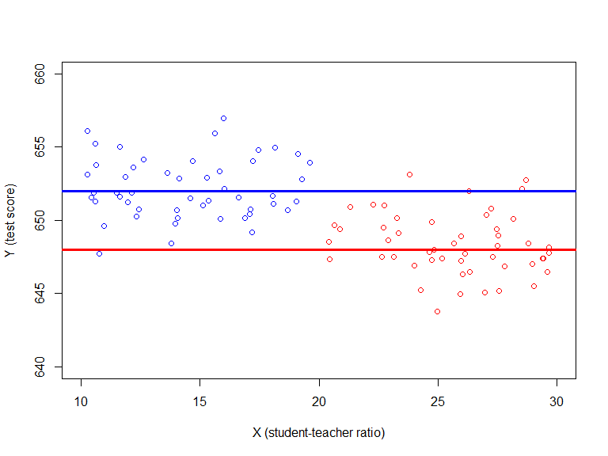
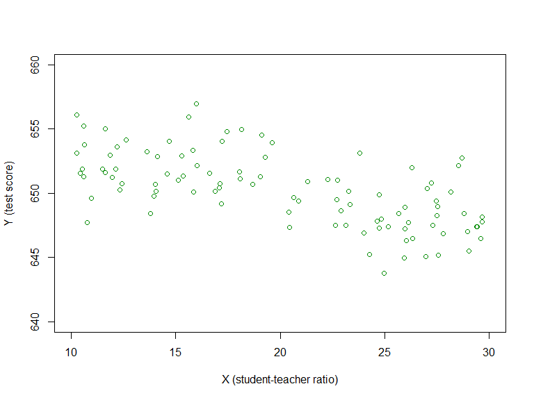
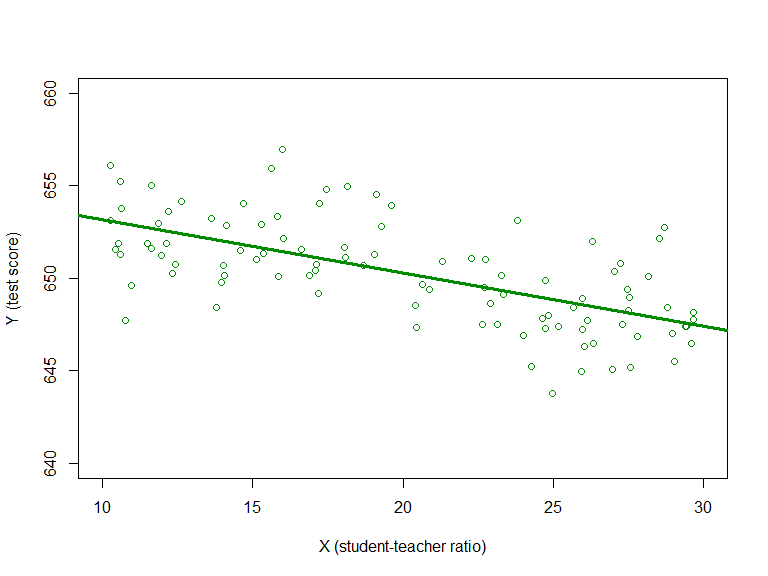

Based on Stock and Watson, ch. 4
Questions about causal relationships can be framed as ceteris paribus (“other things equal”) questions:
What is the expected change in pupil test scores \(Score\) if class size \(STR\) is reduced by, say, one pupil, with all other determinants of \(Score\) held constant?
Suggests an experimental approach to defining and estimating causal effects
Randomized controlled experiment
Treatment group: receives treatment
Control group: receives no treatment
Randomized treatment assignment
Causal effect: the difference in (average) outcome b/w treatment and control groups in an experiment
Problem w/o random treatment assignment is that the regressor (\(STR\)), may be related to other factors that influence the outcome (\(Score\)): endogeneous treatment
\[Y_i = \beta_0 + \beta_1 X_i + u_i; \quad i = 1,\ldots,n\]
Define \(\beta_1\) to be the causal effect of \(X\) on \(Y\): the effect of \(X\) on \(Y\), all other things equal (i.e. holding \(u\) constant)
Under what conditions is the OLS estimator \(\hat{\beta}_1\) a consistent and unbiased estimator of \(\beta_1\), when \(\beta_1\) is defined as a causal effect?
\[Y_i = \beta_0 + \beta_1 X_i + u_i; \quad i=1,\ldots,n\]
where \(\beta_1\) is a causal effect of \(X\) on \(Y\). The OLS estimator \(\hat{\beta}_1\) is a consistent and unbiased estimator of \(\beta_1\) if
Zero conditional mean: \(\mathrm{E}(u_i|X_i) = 0\)
\((Y_{i},X_i;i=1,\ldots,n\,)\) is an i.i.d. sample
Large outliers of \(X_i\) and \(Y_i\) are unlikely: \(Y_i\) and \(X_i\) have nonzero finite 4th moments
\[\mathrm{E}(u_i|X_i) = 0\]
Different \(X_i\)-values are not associated with systematic changes in mean \(u_i\): \(X_i\) is as-if randomly assigned
Zero conditional mean implies zero covariance between the regressor and the error term
\[\mathrm{E}(u_i|X_i) = 0 \Rightarrow \mathrm{Cov}(u_i,X_i) = 0\]
\[\hat{\beta}_1 = \beta_1 + \frac{\frac{1}{n}\sum_{i=1}^n (X_i-\overline{X}) u_i}{\frac{1}{n} \sum_{i=1}^n (X_i-\overline{X})^2} \overset{p}{\rightarrow} \beta_1 + \frac{\mathrm{E}[(X_i-\mu_X) \mathrm{E}(u_i|X_i)]}{\sigma_X^2}\]
If \(\mathrm{E}(u_i|X_i) = 0\), so if \(X_i\) is as-if randomly assigned in the population, then \(\hat{\beta}_1\) is consistent for \(\beta_1\): \(\hat{\beta}_1\overset{p}{\rightarrow} \beta_1\)
Interpretation: in large samples, the probability that \(\hat{\beta}_1\) is very close to \(\beta_1\) is very close to 1!
\[Y_i = \beta_0 + \beta_1 X_i + u_i; \quad \beta_1 =0; \, \mathrm{cov}(u_i,X_i) < 0\] 
\[Y_i = \beta_0 + \beta_1 X_i + u_i; \quad \beta_1 =0; \, \mathrm{cov}(u_i,X_i) < 0\] 
\[Y_i = \beta_0 + \beta_1 X_i + u_i; \quad \beta_1 =0; \, \mathrm{cov}(u_i,X_i) < 0\] 
Key assumption for estimating causal effect of \(X\) on \(Y\): \(\mathrm{E}(u|X)=0\); i.e. \(X\) is as-if randomly assigned
This is an assumption about the distribution of regressors in the population
\(\mathrm{E}(u|X)=0\) is a very strong assumption, and is unlikely to hold in a given application
Estimating causal effects on observational data is very challenging because “treatments” are endogenous